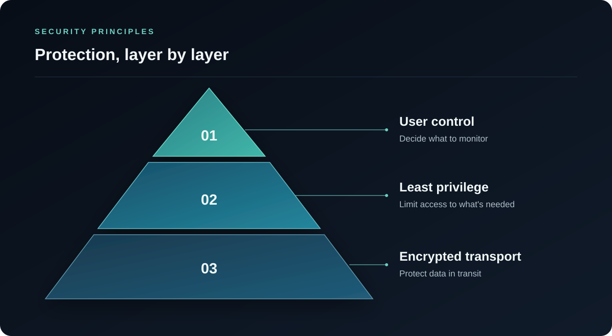

Transport security
HTTPS with TLS 1.2 or higher at the public API edge.
Security / Publicly documented controls
OpsHome NOC is designed to keep private infrastructure private while making the operational data you need available from your iPhone. This page explains the trust boundaries, connections, credential controls, and user responsibilities behind the service.
Security controls are documented around verifiable connections, credential protection, and private-network boundaries.
At a glance
Security posture
These summaries describe the current public configuration and the audited application controls.
HTTPS with TLS 1.2 or higher at the public API edge.
HSTS is enabled with subdomain coverage.
Cloudflare connects to the origin using Full (strict) mode.
Sensitive server-side credentials use AES-256-GCM before storage.
Docker Probe initiates the connection; no inbound port forwarding is required.
Probe releases expose immutable OCI image digests for version pinning.
Trust boundaries

Encryption in transit
The OpsHome backend API is served over HTTPS, and the Cloudflare edge requires TLS 1.2 or higher.
HSTS is enabled with includeSubDomains. Cloudflare uses Full (strict) mode to encrypt the connection to the origin and validate the origin certificate.
Credential protection
Sensitive server-side credentials, including Probe registration and authentication secrets, are encrypted before database storage using AES-256-GCM.
Authentication tokens stored by the iOS app are protected using Apple Keychain Services.
Users should still grant only the permissions needed for the infrastructure integrations they choose to connect.
Private monitoring
The Probe is placed inside the network it needs to observe.
Docker Probe runs inside your authorized private network and initiates outbound HTTPS connections to OpsHome Cloud. OpsHome Cloud does not directly connect into your LAN.
You do not need to open inbound firewall ports, configure port forwarding, or publish a private management panel through a reverse proxy.
The Probe can reach the private services you configure, such as Proxmox, Synology, Docker, Linux, HTTP, HTTPS, or TCP targets. Choose targets and permissions carefully.
Probe monitoring reports health, status, events, and limited asset metadata so you can understand your connected infrastructure.
Access control
Requests are evaluated in the authenticated account context. Users control which infrastructure components are connected to OpsHome and which permissions are granted.
Use dedicated monitoring accounts or limited permissions where supported. Avoid using unnecessary administrator credentials for monitoring integrations.
Optional public status pages are designed to show selected status information without exposing private IP addresses, hostnames, URLs, container names, internal paths, API keys, or Probe identifiers.
Users are responsible for the local host, Docker installation, credentials, permissions, network policy, and targets selected for monitoring.
Release integrity
Docker Probe releases are published with immutable OCI image digests. A deployment can pin an exact image version instead of relying only on a mutable tag.
docker pull opshomenoc/opshome-noc@sha256:<published-digest>Data handling
Only the information needed for monitoring and service operation is described here.
| Data category | Purpose |
|---|---|
| Account and subscription information | Sign-in, account management, and subscription features. |
| Monitoring configuration | Run the checks and deliver the views you configure. |
| Asset metadata | Organize connected infrastructure and show relationships. |
| Health metrics and status | Current state, history, trends, and health summaries. |
| Operational events and service records | Incidents, recoveries, alerts, and troubleshooting context. |
Public verification
Public TLS and HTTP header reports provide an external view of the current public configuration.
Documentation and contact
For security-related questions or suspected issues, contact support@opshome.run.